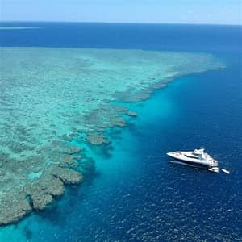

Keajaiban alam: Great Barrier Reef
The Great Barrier Reef is the world’s largest coral reef system, stretching over 2,300 kilometers along Australia’s northeastern coast and home to thousands of marine species. The Great Barrier Reef is located in the Coral Sea, off the coast of Queensland, Australia, extending from the Torres Strait in the north to Bundaberg in the south, covering approximately 344,400 square kilometers (133,000 square miles) and comprising around 3,000 individual reefs and 900 islands. It is the largest living structure on Earth, visible from space, and a UNESCO World Heritage Site since 1981.

Threats, The Great Barrier Reef faces significant threats from climate change, including rising sea temperatures that cause coral bleaching, ocean acidification, and more frequent cyclones. Human activities such as pollution, sediment runoff, overfishing, and coastal development further stress the ecosystem. Outbreaks of crown-of-thorns starfish have also contributed to coral loss. The reef has experienced multiple mass bleaching events in recent years, with severe impacts on coral cover and reproduction.